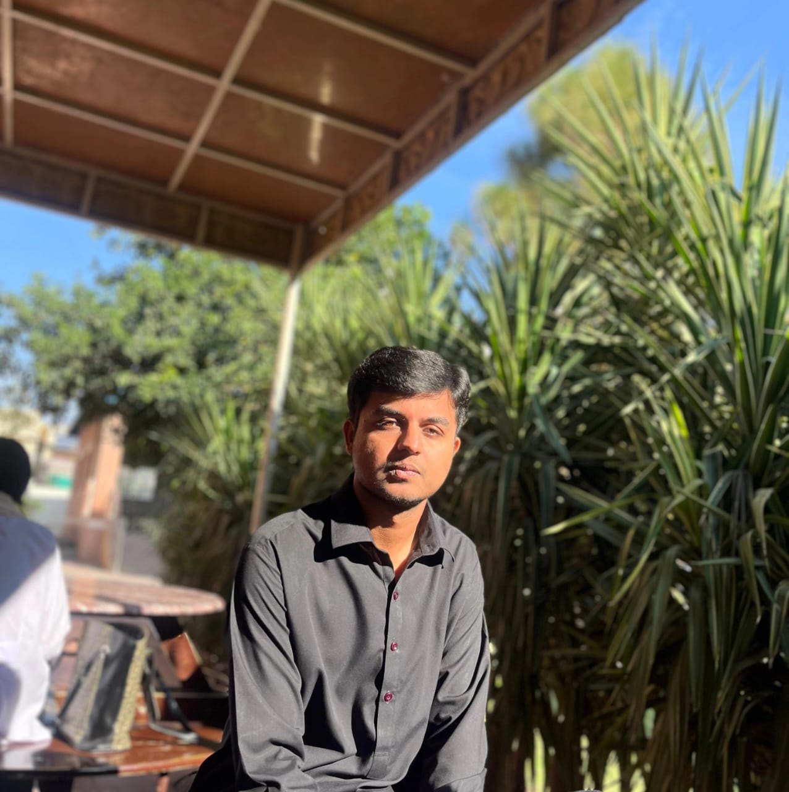

FEATURED / 001Nightshift
Nightshift
Dashboard
A calmer command center for people who need to see the signal through the noise.
I turn loose ideas into responsive interfaces with a clear rhythm, expressive color, and just enough motion to make a screen feel alive.

A small archive of interface experiments where structure, atmosphere, and useful details meet.
A calmer command center for people who need to see the signal through the noise.
Small screens, generous thinking.
A visual language for better focus.